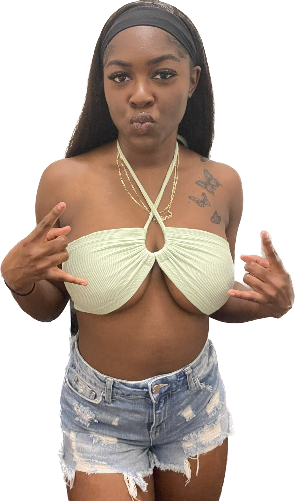
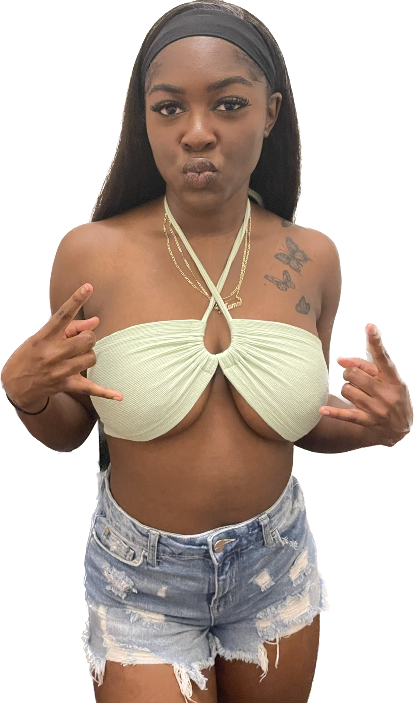

Tatumn Brown
Over the past few years, my professional experience has been a remarkable journey filled with growth, challenges, and a sense of accomplishment. It has been a period of continuous learning and honing my skills, while also embracing new opportunities that have shaped me into the professional I am today.
Currently, I find myself working as a marketing manager for a reputable technology company. This role has exposed me to various aspects of marketing, including market research, strategic planning, campaign execution, and performance analysis. I have had the privilege of working with a talented and diverse team, collaborating on innovative marketing strategies to drive brand awareness, generate leads, and ultimately boost revenue.
One of the most significant achievements during my time in this role was the successful launch of a new product line. I played a pivotal role in developing the marketing strategy, identifying target audiences, and crafting compelling messaging. The launch campaign was executed flawlessly, resulting in a substantial increase in sales and market share. This accomplishment not only showcased my strategic thinking and leadership abilities but also instilled in me a deep sense of pride and satisfaction.
In addition to launching new products, I have also been heavily involved in creating and managing digital marketing campaigns. Through careful analysis of customer behavior and market trends, I have been able to optimize our online advertising efforts, driving higher click-through rates, improving conversion rates, and maximizing return on investment. This experience has given me a strong understanding of digital marketing channels, such as search engine optimization, social media advertising, and content marketing.
As a marketing manager, I have had the opportunity to work closely with cross-functional teams, including sales, product development, and creative services. Collaborating with these teams has allowed me to gain a comprehensive view of the entire business process and understand how different functions interconnect to achieve common goals. Through effective communication and teamwork, we have been able to streamline processes, improve efficiency, and deliver exceptional results.
Moreover, I have also developed strong project management skills during my current professional experience. Balancing multiple projects simultaneously, I have learned to prioritize tasks, allocate resources effectively, and meet tight deadlines. This ability to manage complex projects has not only enhanced my efficiency but has also contributed to the overall success of the team and the organization.
Beyond the technical skills I have acquired, my current professional experience has also nurtured my personal growth and professional development. I have attended industry conferences, participated in workshops, and pursued relevant certifications to stay updated with the latest trends and best practices. Additionally, I have actively sought feedback from mentors and supervisors, continuously striving to improve my performance and broaden my knowledge.
Continuing my professional journey, I have also had the opportunity to develop strong leadership skills in my current role. As a marketing manager, I have been responsible for guiding and mentoring a team of talented individuals, fostering a collaborative and productive work environment. I have learned to delegate tasks effectively, provide constructive feedback, and motivate team members to reach their full potential. Witnessing the growth and success of my team has been incredibly rewarding, and it has further fueled my passion for leadership and people development.
Experience
Produce Lead
• Checked expiration dates
• Kept produce fresh
• Experience with Reciept printers, freezers, and cash registers
Filing Assistant
• Organized Filing cabinets
• Went through files
• Organized drivers CPR forms
• Confirmed application
Education
UC Riverside
Portfolio
Portfolio



© Tatumn Brown
Portfolio

© Tatumn Brown